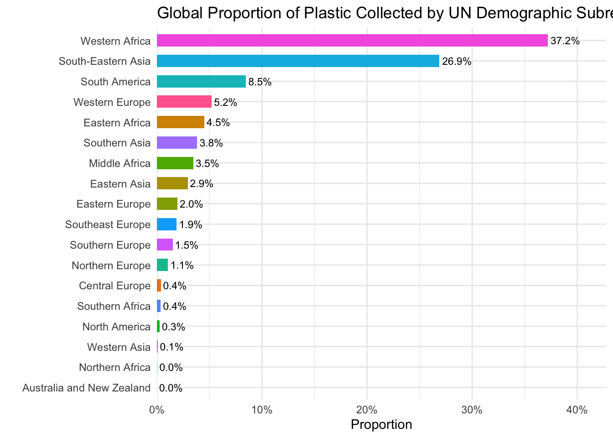
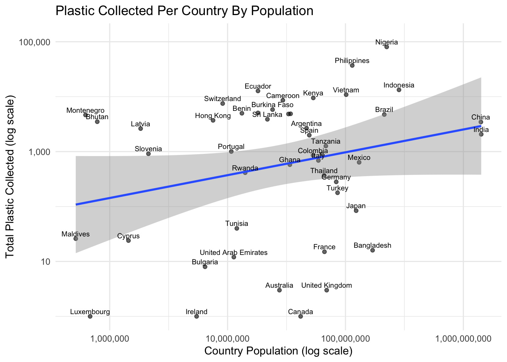

library(httr)
library(tidyjson)
library(jsonlite)
library(tidyverse)
library(plotly)Project 1 Report
plastics <- read_csv('https://raw.githubusercontent.com/rfordatascience/tidytuesday/main/data/2021/2021-01-26/plastics.csv')
plastics# A tibble: 13,380 × 14
country year parent_company empty hdpe ldpe o pet pp ps pvc
<chr> <dbl> <chr> <dbl> <dbl> <dbl> <dbl> <dbl> <dbl> <dbl> <dbl>
1 Argenti… 2019 Grand Total 0 215 55 607 1376 281 116 18
2 Argenti… 2019 Unbranded 0 155 50 532 848 122 114 17
3 Argenti… 2019 The Coca-Cola… 0 0 0 0 222 35 0 0
4 Argenti… 2019 Secco 0 0 0 0 39 4 0 0
5 Argenti… 2019 Doble Cola 0 0 0 0 38 0 0 0
6 Argenti… 2019 Pritty 0 0 0 0 22 7 0 0
7 Argenti… 2019 PepsiCo 0 0 0 0 21 6 0 0
8 Argenti… 2019 Casoni 0 0 0 0 26 0 0 0
9 Argenti… 2019 Villa Del Sur… 0 0 0 0 19 1 0 0
10 Argenti… 2019 Manaos 0 0 0 0 14 4 0 0
# ℹ 13,370 more rows
# ℹ 3 more variables: grand_total <dbl>, num_events <dbl>, volunteers <dbl>Context of the Data
This data comes from Break Free from Plastic, a global organization that runs yearly brand audits where volunteers around the world collect plastic waste. The dataset contains 2019 and 2020 data, with the following variables: country, year, parent_company, empty, hdpe, idpe, o, pet, pp, ps, pvc, grand_total, num_events, and volunteers.
Data Cleaning
Csvs from 2019 and 2020 were stacked to make one overall plastic.csv dataset. The grand_total column for 2020 csvs were mutated to convert the data type from character to numeric. Also, 2019 data had two columns for pp (Polypropylene) and ps (Polystyrene) count, so the columns are combined to make one overall column for each. Lastly, some of the variables are renamed to match one another, to make sure the merging functions correctly.
Two Research Questions With These Data
Which companies appear most frequently across countries in terms of plastic pollution; is there a pattern in types of companies that show up?
Which countries collected the most plastic overall, and how much of that is explained by number of volunteers vs. other factors?
Two Research Questions with Supplemental Data
Are the most frequently appearing companies the ones with the highest plastic packaging production?
Do countries that are closer to coastlines tend to have more plastic pollution collected?
Two Visualizations For the RQs


Average Plastic Type Breakdown for a Given Country
# Function to create breakdown of plastic type averages given a country
sumCountry <- function(countryName) {
countryData <- plastics |>
filter(country == countryName) |>
summarize(
avePlastic = mean(grand_total, na.rm = TRUE),
aveHdpe = mean(hdpe, na.rm = TRUE),
aveLdpe = mean(ldpe, na.rm = TRUE),
avePet = mean(pet, na.rm = TRUE),
avePp = mean(pp, na.rm = TRUE),
avePs = mean(ps, na.rm = TRUE),
avePvc = mean(pvc, na.rm = TRUE)
)
}
# Example of calling the function
print(sumCountry("Argentina"))# A tibble: 1 × 7
avePlastic aveHdpe aveLdpe avePet avePp avePs avePvc
<dbl> <dbl> <dbl> <dbl> <dbl> <dbl> <dbl>
1 12.8 1.12 0.501 5.78 1.65 0.587 0.0798Grand Total Summary Statistics for each Country
# Function to create summary statistics of grand total given a country
country_total_summary <- function(ctry) {
# Check to see if given country is in data
if (
!(ctry %in% plastics$country)
) {
stop(
paste("Country not found:", ctry)
)
}
# Creating a tibble with summary statistics
totals <- plastics |>
filter(country == ctry) |>
pull(grand_total)
tibble(
Country = ctry,
Mean = mean(totals, na.rm = TRUE),
SD = sd(totals, na.rm = TRUE),
Median = median(totals, na.rm = TRUE),
IQR = IQR(totals, na.rm = TRUE),
Sum = sum(totals, na.rm = TRUE))
}
# Applying function to all countries
plastics |>
distinct(country) |>
pull(country) |>
map_dfr(.f = country_total_summary)# A tibble: 69 × 6
Country Mean SD Median IQR Sum
<chr> <dbl> <dbl> <dbl> <dbl> <dbl>
1 Argentina 12.8 146. 1 1 6422
2 Australia 23.6 118. 2 4 1674
3 Bangladesh 14.4 27.4 8 12 2415
4 Benin 2580. 2782. 2626 4770. 10318
5 Bhutan 1400 1917. 0 3500 7000
6 Brazil 75.2 455. 2 4 11725
7 Bulgaria 9.54 53.9 0 1.25 496
8 Burkina Faso 486. 1349. 55 181 20410
9 Cameroon 113. 702. 18 62.5 17190
10 Canada 27.4 153. 2 11 1889
# ℹ 59 more rowsPercent Plastic Type by Country and Company
# Function creating percent of plastic produced given a country and parent company
percent_plastic_type <- function(country_name,
parent_company_name,
plastic_type){
result <- plastics |>
filter(country == country_name,
parent_company == parent_company_name) |>
mutate(percent_plastic_type = .data[[plastic_type]] / grand_total) |>
select(
country,
year,
parent_company,
all_of(plastic_type),
percent_plastic_type) |>
filter(
!is.na(percent_plastic_type)
)
# Checking if there is no output
if (nrow(result) == 0) {
stop("Grand total is zero or no data found, cannot calculate percentage.")
}
head(result, 2)
}
# Example of calling the function
percent_plastic_type("Argentina", "Nestle", "pet")# A tibble: 1 × 5
country year parent_company pet percent_plastic_type
<chr> <dbl> <chr> <dbl> <dbl>
1 Argentina 2020 Nestle 0 0Top 10 Countries by LDPE Proportion of Polyethylene Plastic Waste
# Function creating LDPE proportion of polyethylene plastic waste
dpe_prop <- function(country_name) {
plastics |>
filter(country == country_name) |>
mutate(ldpe_prop = ldpe / (hdpe + ldpe)) |>
summarise(avg_ldpe_prop = mean(ldpe_prop, na.rm = TRUE)) |>
pull(avg_ldpe_prop)
}
# Apply across all countries
plastics |>
distinct(country) |>
mutate(ldpe_proportion = map_dbl(country, dpe_prop)) |>
slice_max(ldpe_proportion, n = 10)# A tibble: 10 × 2
country ldpe_proportion
<chr> <dbl>
1 Montenegro 1
2 Netherlands 1
3 Greece 1
4 France 0.977
5 Germany 0.938
6 Slovenia 0.922
7 Korea 0.906
8 Philippines 0.895
9 Bulgaria 0.887
10 United Kingdom of Great Britain & Northern Ireland 0.856Using API to retrieve country-level data
# Function used to get data from the API
my_api_key <- Sys.getenv("API_NINJAS_KEY")
base_url <- "https://api.api-ninjas.com/v1/country?name="
get_country_url <- function(country, api_key = my_api_key){
GET(
url = str_c(base_url, URLencode(country)),
add_headers("X-Api-Key" = api_key)
)
}This supplemental dataset provides country-level demographic, economic, and geographic information. The API returns a variety of different variables for each country including gdp_per_capita, population, internet_users, tourists, region, urban_population, co2_emissions, and many others.
# Dataset for all countries from plastics taken from API, (3 missing)
all_countries <- plastics |>
filter(country != "EMPTY") |>
distinct(country) |>
pull(country)
all_countries_df <- map(all_countries, get_country_url)
all_countries_data <- map(
all_countries_df,
~fromJSON(rawToChar(.x$content))
) |>
bind_rows() |>
relocate(name) Note: We noticed that all_countries_data have duplicated rows. So, we handle this by making each row unique.
all_countries_data <- all_countries_data |>
distinct(name, .keep_all = TRUE)# Merge plastics and population API datatset
population_plastics <- plastics |>
mutate(country = str_to_title(country)) |>
left_join(all_countries_data, by = c("country" = "name"))Visualization 1
# Visualization of plastic output versus GDP
population_plastics |>
filter(parent_company == "Grand Total") |>
ggplot(
aes(x = gdp_per_capita, y = grand_total)
) +
geom_point(alpha = 0.6) +
geom_smooth(method = "lm") +
geom_text(
aes(label = country),
size = 2.5,
check_overlap = TRUE,
vjust = -0.5
) +
scale_x_log10(labels = scales::label_dollar()) +
scale_y_log10(labels = scales::label_comma()) +
labs(
x = "GDP Per Capita (log scale)",
y = "Total Plastic Collected (log scale)",
title = "Plastic Collected Per Country By GDP"
) +
theme_classic()Visualization 2
# Visualization of interner user% by total plastic collected for each country
bubble_plot <- population_plastics |>
filter(parent_company == "Grand Total",
country != "Empty",
!is.na(region)) |>
ggplot(
aes(x = internet_users,
y = grand_total,
size = volunteers,
color = region,
text = paste("Country:", country,
"<br>Internet Users:", internet_users, "%",
"<br>Plastic Collected:", scales::comma(grand_total),
"<br>Volunteers:", scales::comma(volunteers),
"<br>Region:", region))
) +
geom_point(alpha = 0.5) +
scale_x_continuous(labels = scales::label_comma()) +
scale_y_log10(labels = scales::label_comma()) +
scale_size_continuous(
labels = scales::label_comma(),
range = c(5, 25)
) +
labs(
x = "Internet Users (% of Population)",
y = "Total Plastic Collected (log scale)",
size = "Volunteers",
color = "Region",
title = "Internet User % by Total Plastic Collected Per Country",
subtitle = "(bubble size = # volunteers)"
) +
theme_classic() +
theme(
legend.position = "none",
plot.title = element_text(size = 14)
)
ggplotly(bubble_plot, tooltip = "text")Second dataset
# Function used to get data from the API
base_url2 <- "https://restcountries.com/v3.1/name/"
get_country_url2 <- function(country){
GET(
url = str_c(base_url2, URLencode(country))
)
}Another supplemental dataset contains more robust country demographic, cultural, and globablly recognized data, including country name (in native writing), region and subregion as identified by the UN, population size, geographic size, geographic location, etc. From this dataset we pulled population, region, subregion, and area.
# Another dataset for all countries from plastics taken from API
all_countries2 <- plastics |>
filter(country != "EMPTY") |>
distinct(country) |>
pull(country)
all_countries_df2 <- map(all_countries2, get_country_url2)
get_country_info2 <- function(response) {
if (response$status_code != 200) return(NULL)
result <- fromJSON(rawToChar(response$content))
result$status <- NULL
tibble(
name = result$name$common,
official = result$name$official,
region = result$region,
subregion = result$subregion,
population = result$population,
area = result$area
)
}
all_countries_data2 <- map(all_countries_df2, get_country_info2) |>
compact() |>
bind_rows() |>
relocate(name)Note: We noticed that all_countries_data2 have duplicated rows. So, we handle this by making each row unique.
all_countries_data2 <- all_countries_data2 |>
distinct(name, .keep_all = TRUE)#Merge plastics and demographic API dataset
population_plastics2 <- plastics |>
mutate(country = str_to_title(country)) |>
left_join(all_countries_data2, by = c("country" = "name"))Visualization 1
#Visualization of plastic collected by UN demographic subregion
population_plastics2 |>
filter(!is.na(subregion),
parent_company == "Grand Total") |>
group_by(subregion) |>
summarise(
grand_total = sum(grand_total, na.rm = TRUE),
.groups = "drop"
) |>
mutate(proportion = grand_total / sum(grand_total)) |>
ggplot(
aes(x = reorder(subregion, proportion),
y = proportion,
fill = subregion)
) +
geom_col(width = 0.6) +
coord_flip() +
geom_text(
aes(label = scales::percent(proportion, accuracy = 0.1)),
hjust = -0.1,
size = 3
) +
scale_y_continuous(labels = scales::percent,
expand = expansion(mult = c(0, 0.15))
) +
labs(title = "Global Proportion of Plastic Collected by UN Demographic Subregion",
x = "",
y = "Proportion") +
theme_minimal() +
theme(legend.position = "none")
Visualization 2
#Total plastic by country population
population_plastics2 |>
filter(parent_company == "Grand Total") |>
ggplot(
aes(x = population, y = grand_total)
) +
geom_point(alpha = 0.6) +
geom_smooth(method = "lm") +
geom_text(
aes(label = country),
size = 2.5,
check_overlap = TRUE,
vjust = -0.5
) +
scale_x_log10(labels = scales::label_comma()) +
scale_y_log10(labels = scales::label_comma()) +
labs(
x = "Country Population (log scale)",
y = "Total Plastic Collected (log scale)",
title = "Plastic Collected Per Country By Population"
) +
theme_minimal()